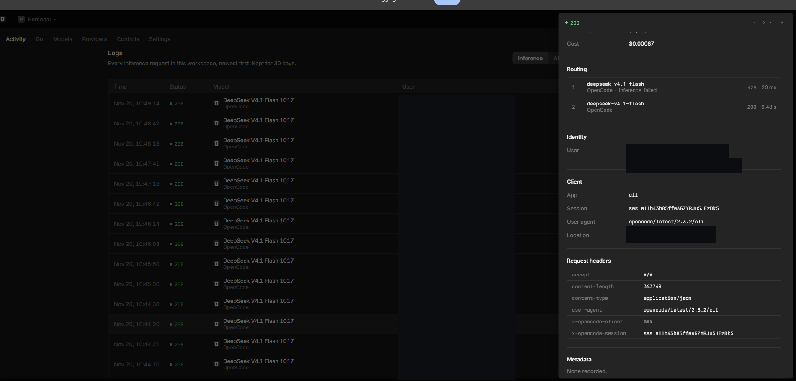

Real OpenCode A/B · 3 sessions
Local commit history, measured.
Three real agent sessions on the same repository and the same question. One arm had no Sieve MCP, one had Sieve but ignored it, and one followed the /sieve workflow. The numbers below are what each session actually spent.
Where the tokens went
measured per session
Non-cached input
The column to compare when caching is not counted.
Total prompt
Input plus cache reads. This is the volume the model sees across every step.
The ledger
one run per arm
| Session | Steps | Tool calls | Input | Cache read | Total prompt | Output | Answer |
|---|---|---|---|---|---|---|---|
|
No Sieve control
ses_e0af27d44ffegdFJqL7ktXdu7I
child ses_e0af247c6ffePZmr0TGZ15JfXc
|
12 | 16 read · 2 grep 1 glob · 4 subagent |
114,968 | 478,464 | 593,432 | 6,915 | Correct |
|
Plain Sieve MCP unused
ses_e0af456a1ffeYzqa4fe10S0z4I
|
6 | 13 read · 1 glob 0 Sieve |
47,357 | 153,088 | 200,445 | 2,269 | Correct |
|
Guided Sieve workflow
ses_e0aee6f7affe1x7ey8ksN15qkr
|
10 | 10 execute calls 23 Sieve calls |
44,135 | 317,696 | 361,831 | 2,512 | Correct |
Plain vs guided
same MCP connection
The question alone
The prompt asked only for an explanation. The agent saw the Sieve tools and chose native file reads instead.
The workflow in the prompt
The prompt added the /sieve steps. The agent indexed once, queried the repo, and read through Sieve instead of opening whole files.
The MCP alone changed nothing. The plain arm had all 9 tools and never called one. The guided arm was 80.5% more expensive in total prompt than the plain arm because it took 4 more steps, but it was still 39.0% below the control and gave the most precise answer. Step count matters more than the size of a single read.
Sieve inside the guided run
tool-level tokens
What Sieve returned
Before is the full text. After is what the agent received. Filtered to the guided session window in ~/.sieve/events.jsonl.
How local history reaches the dashboard
answer from all three sessions
git status
git log
git rev-list
readLocalState
readLocalBranches
parseStatus / parseLog
github/dashboard
local/repos
fetchDashboard
RepositoryResult[]
RepoHistoryDialog
CommitTree
commit-graph.ts
Answers
all three correct on the core path
Plain Sieve
CorrectCore path correct. No line numbers. Missed the queue-view.tsx and main-line.tsx local summaries.
No Sieve
CorrectBroadest UI coverage. Found the queue and main-line surfaces. Used a 4-call explore subagent to get there.
Guided Sieve
CorrectMost precise line references. Stayed on the core path. Used 23 Sieve calls across 10 steps.
Cost proof from OpenCode
Console request log

The Console records a dollar cost for every request. This Console-routed deepseek-v4.1-flash request cost $0.00087. The A/B sessions used opencode-go/kimi-k2.7-code, and session_v2 reports 0.0 for them, so this is proof of the Console's cost surface, not the A/B total. Personal identifiers are redacted.